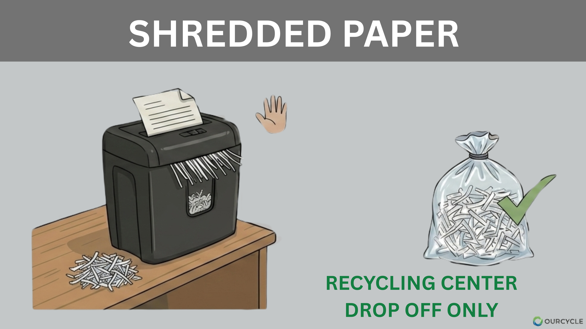
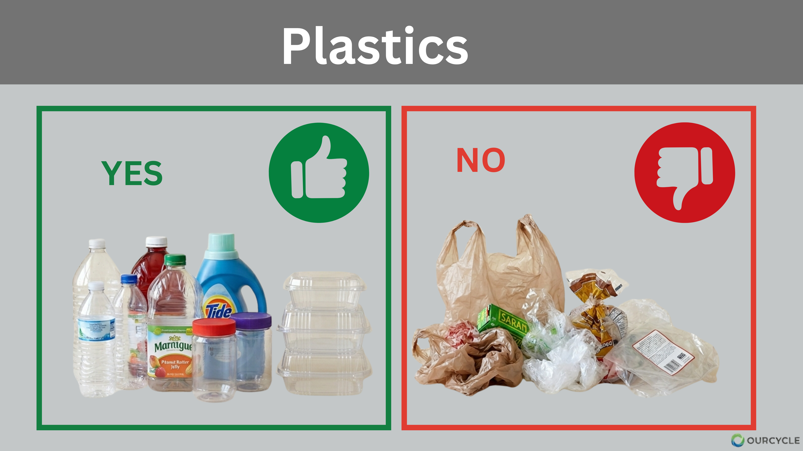
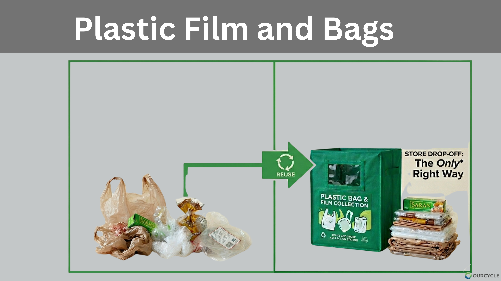
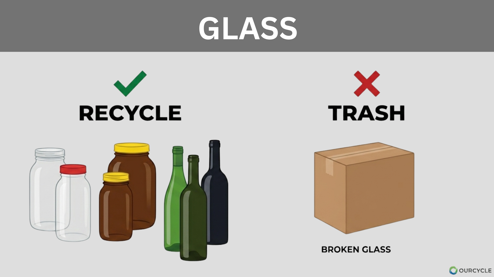
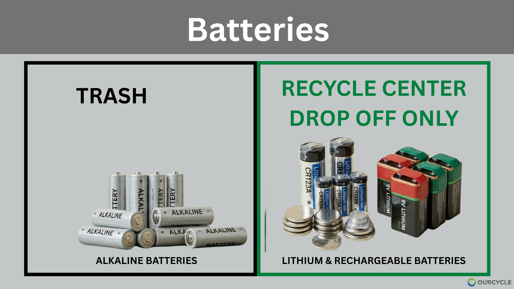
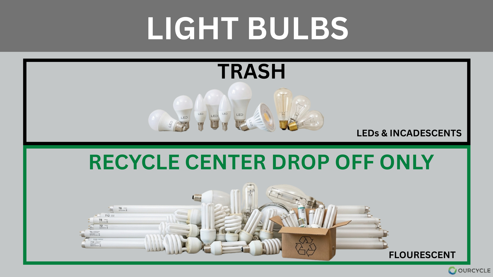
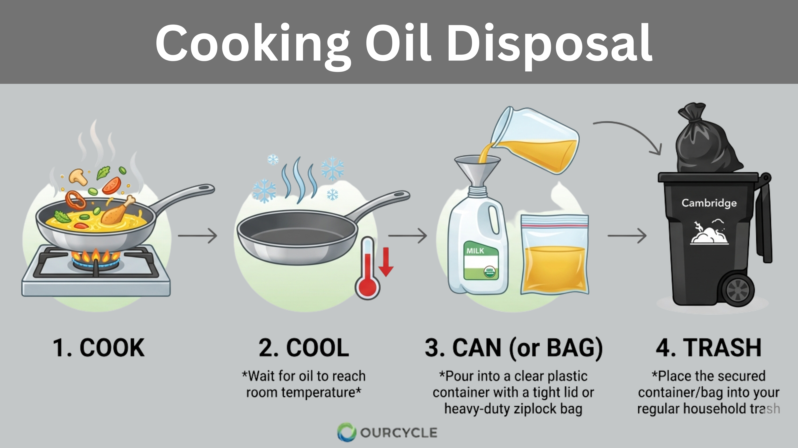
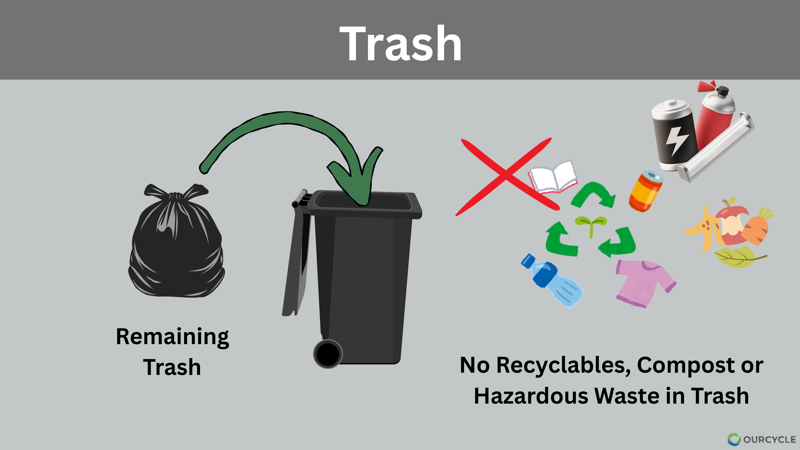

📄 1. Paper & Cardboard: The Comeback Kings

The Fun Part: Flattening boxes is a great stress reliever, and it's highly efficient!
Did You Know? Recycling one ton of paper saves 17 trees, 7,000 gallons of water, and enough energy to power a home for six months.
The Yuck Factor: No greasy pizza boxes or coffee cups in the blue bin—but these can be composted!
Pro-Tip: Remove plastic liners from cereal boxes first. Staples are fine; sorting machines handle them.
Cambridge Rule: Nest flattened boxes inside one larger box if your bin is full. Do not use string or twine.
✂️ 2. Shredded Paper: Secure Destruction

The Fun Part: Watch your sensitive documents get pulverized on the spot at city events!
Did You Know? Once paper is shredded, fibers become too short for high-quality paper, so it usually becomes tissue paper or egg cartons.
The Yuck Factor: Small shreds jam optical scanners and fall through machinery cracks at the sorting plant.
Pro-Tip: Compost small amounts of shredded paper in your green bin! It's a great "brown" material for soil.
Cambridge Rule: Use official City shred events to dispose of sensitive files safely.
🥤 3. Plastics: The Identity Crisis

The Fun Part: You get to keep the caps ON! Modern tech separates the cap plastic from the bottle plastic later.
Did You Know? Only about 9% of all plastic ever made has been recycled. Focus on "bottles, jars, tubs, and jugs."
The Yuck Factor: NO PLASTIC BAGS! Never bag recyclables; bags tangle the gears and stop the entire plant.
Pro-Tip: Empty and rinse containers—"spoon clean" is good enough. Labels are fine to leave on.
Cambridge Rule: Black plastic is TRASH, even hard containers. Scanners cannot see black pigment against the belts.
🎞️ 4. Plastic Film: The Great Tanglers

The Fun Part: If you can poke your thumb through it and it stretches, it's film! These become composite lumber for decks.
Did You Know? Plastic film is the #1 cause of machinery downtime. Workers have to climb in and manually cut them out.
The Yuck Factor: These wrap around plant rotors and shut down the whole facility.
Pro-Tip: Pop "air pillows" from packages to save space in your drop-off bag.
Cambridge Rule: Take these to grocery store collection bins or the Recycling Center at 147 Hampshire St (View Hours).
🍾 5. Glass: The Infinite Loop

The Fun Part: Glass can be recycled forever without losing quality. A jar can return to a shelf in 30 days.
Did You Know? Using recycled glass (cullet) consumes 40% less energy than making glass from raw sand.
The Yuck Factor: Broken window glass or mirrors belong in the trash. They have different melting points.
Pro-Tip: Metal caps should be left ON the glass jars for sorting.
Cambridge Rule: Blue, green, clear, and brown glass are all accepted curbside.
🥫 6. Metal: The Recycling MVP

The Fun Part: Aluminum is the most valuable material in your bin. Recycling one can runs a TV for 3 hours!
Did You Know? About 75% of all aluminum ever produced is still in use today because it is so profitable to recycle.
The Yuck Factor: No scrap metal like pipes or hangers in the blue bin. They damage the sorting belts.
Pro-Tip: Ball up clean aluminum foil to the size of a fist so it doesn't blow away or get caught.
Cambridge Rule: Take pans, pots, and hangers to the Recycling Center at 147 Hampshire St (View Hours).
🔋 7. Batteries: The Spicy Little Nuggets

The Fun Part: Handling these correctly prevents literal truck fires and protects the environment from heavy metals.
Did You Know? If lithium batteries are punctured by a truck compactor, they can undergo "thermal runaway" and start fires.
The Yuck Factor: Lithium-ion and rechargeable batteries are dangerous in trash. Never hide them in the garbage!
Pro-Tip: Tape the ends of 9V and lithium batteries with clear tape to prevent sparking.
Cambridge Rule: Alkaline batteries go in TRASH. All others go to the Recycling Center at 147 Hampshire St (View Hours).
⚡ 8. Electrical Waste: The Power Players

The Fun Part: Your old toaster can become a new bike frame! Small appliances are full of high-quality metals.
Did You Know? Electrical waste is the fastest-growing waste stream; much of it contains 100% recyclable copper wiring.
The Yuck Factor: Power cords act like "tanglers." If a cord gets loose in a blue bin, it acts like a whip inside the machinery.
Pro-Tip: If the item still works, try "Buy Nothing" groups first! Reuse is always better.
Cambridge Rule: Small appliances and loose power cords go in the Electronics Shed at the Recycling Center at 147 Hampshire St (View Hours).
💻 9. Electronic Waste: The Data Keepers

The Fun Part: Donation is great! Check local retailers like Staples for trade-ins.
Did You Know? A single iPhone contains about 0.034g of gold and 0.34g of silver.
The Yuck Factor: Monitors and screens contain mercury and lead and are never allowed in the trash.
Pro-Tip: Wipe your data! For phones, use "Factory Reset." Physically destroy hard drives if needed.
Cambridge Rule: Computers, laptops, and monitors are BANNED from curbside trash. Bring them to the Recycling Center at 147 Hampshire St (View Hours).
💡 10. Mercury & Light Bulbs: Handle with Care

The Fun Part: You’re keeping toxic mercury vapors out of our local air and water.
Did You Know? One fluorescent light contains enough mercury to contaminate up to 7,000 gallons of water.
The Yuck Factor: Broken fluorescent lights release mercury. Vent the room immediately and never vacuum!
Pro-Tip: Modern LEDs and incandescent bulbs are mercury-free and safe for the regular bin.
Cambridge Rule:
Trash: Place LEDs and incandescents in regular trash (wrapped).
Recycle: Bring all fluorescent lights to the Recycling Center at 147 Hampshire St (View Hours).
🍳 11. Cooking Oil: The Drain Protector

The Fun Part: You’re helping create renewable energy (biodiesel).
Did You Know? Grease hardens like concrete in sewer systems, creating "fatbergs" that cause backups.
The Yuck Factor: Never pour grease down the drain! It is the leading cause of local sewer overflows.
Pro-Tip: For small grease amounts, wipe the pan with a paper towel and toss it in your Green Bin (Compost).
Cambridge Rule: For large liquid oil amounts, cool, seal in a container, and place in the trash.
💊 12. Medical & Sharps: The Safety First Zone

The Fun Part: Drop off meds anonymously—no labels or IDs needed, protecting your privacy.
Did You Know? Flushing medications sends them into the Charles River, harming fish populations.
The Yuck Factor: Never flush meds or toss needles in trash. This creates "needle stick" risks for workers.
Pro-Tip: No red biohazard box? Use a thick plastic bottle (like laundry detergent) and tape it shut.
Cambridge Locations:
- Meds & Sharps: Police Dept Lobby (125 Sixth St) - 24/7.
- Harvard Sq Kiosk: Church St & Mass Ave - Outdoor drop-box.
- Porter Sq Kiosk: Porter Sq Fire House (2029 Mass Ave) - Outdoor drop-box.
- Central Square Area: Kiosks at:
• 378 Mass Ave
• 628 Mass Ave
• City Hall (Inman St side)
• Green St (Parking Lot 8)
⚠️ 13. Household Hazardous Waste (HHW)

The Fun Part: Clearing these out makes your home safer and protects local groundwater.
What is HHW? Toxic/flammable items like Pesticides, Gasoline, and Propane Tanks.
The Yuck Factor: BANNED from regular trash. These cause chemical fires in trucks.
Pro-Tip: Bring proof of Cambridge residency! Email recycle@cambridgema.gov if bringing >25 gallons.
Cambridge Schedule:
Collection events are seasonal. Check the official city calendar:
📅 View Official Cambridge HHW Schedule
📅 View Official Cambridge HHW Schedule
👕 14. Clothes & Textiles: The Second Chance Stylists

The Fun Part: Almost 95% of all textiles—even ripped/stained ones—can be recycled!
Did You Know? The fashion industry is responsible for 10% of global carbon emissions.
The Yuck Factor: Clean and Dry is the rule. Wet or moldy clothes ruin an entire bin.
Pro-Tip: Single shoes and lonely socks are accepted. Just bag them up.
Cambridge Rule: Textiles are BANNED from the trash in MA.
- For Recycling: Helpsy Cambridge or the Recycling Center at 147 Hampshire St (View Hours).
- For Donation: 👉 Visit OurCycle Donation Page
🏠 15. Bulky Items: The Heavy Hitters

The Fun Part: Cambridge provides free weekly pickup for most large items like sofas.
Did You Know? When collected, bulky wooden items are often processed to recover quality materials.
The Yuck Factor: Sidewalk blocking is dangerous for strollers/wheelchairs. Limit to one piece per week.
Pro-Tip: Is it in good shape? Try donating it first!
Cambridge Rule: One furniture piece per week is free curbside. No appointment needed.
📋 View Official Bulky Item Guidelines
📋 View Official Bulky Item Guidelines
📦 16. Moving Out: The Fresh Start

The Fun Part: Rehoming your gear helps a neighbor! A "Curb Alert" often clears a sidewalk in minutes.
Did You Know? Move-out weeks cause a massive spike in waste; plan 2 weeks early.
The Yuck Factor: "Wish-cycling" (leaving junk) can lead to landlord fines if items stay past trash day.
Pro-Tip: Use our OurCycle Donation Page to find charities.
Cambridge Rule: Certain items require a paid pickup:
- Mattresses & Box Springs: $25.00 per piece.
- Appliances: $20.00 per item (fridges, ACs).
📅 Schedule Pickup & Pay Fees:
🛢️ 17. Used Oil: The Water Warrior

The Fun Part: Motor oil doesn't wear out—it just gets dirty and can be cleaned infinitely!
Did You Know? One gallon of oil can contaminate a million gallons of fresh water.
The Yuck Factor: Never dump oil down the drain; it goes straight to the Charles River.
Pro-Tip: Never mix oil with paint or gas; it makes it unrecyclable.
Cambridge Rule: Bring used motor oil to the Recycling Center at 147 Hampshire St (View Hours) during HHW hours.
18. Tires: The Rubber Rebels

The Fun Part: Old tires become playground surfaces and new asphalt!
Did You Know? Tires are indestructible, making them a nightmare in landfills where they "float."
The Yuck Factor: Abandoned tires breed mosquitoes carrying West Nile.
Pro-Tip: Tire shops usually take old ones for a small fee when you buy new ones.
Cambridge Rule: Bring up to 4 tires/year (off-rim) to the Recycling Center at 147 Hampshire St (View Hours).
🎄 19. Holiday & Seasonal: The Festive Cleanup

The Fun Part: Your pumpkins and trees become clean energy and nutrient-rich soil!
Did You Know? Holiday trees are chipped into mulch used in our city parks.
The Yuck Factor: Tinsel and ornaments are "tanglers" and ruin mulch batches.
Pro-Tip: Feed unpainted pumpkins to the green bin (remove candles).
Cambridge Rule: Curbside tree collection runs the first 2 weeks of Jan. Trees must be bare.
City's website for tree collection details
✨ 20. Specialty Drop-Offs: The "Recycling Center Only" List

The Fun Part: The center is like a library for waste! Drop off rigid plastics, library books, and more. You can visit the center and go through the library and pick what you want to rehome.
Did You Know? The center processes materials too difficult for curbside trucks.
The Yuck Factor: Styrofoam peanuts go in trash. Only white block foam is accepted.
Pro-Tip: Check the "Get Rid of It Right" tool before driving over.
Cambridge Rule: Recycling Center at 147 Hampshire St (View Hours). Resident ID required.
🔄 21. Reuse & Donation: Give it a Second Life

The Fun Part: Joining a "Buy Nothing" group save money and builds community.
Did You Know? Reuse is ABOVE Recycling in the hierarchy; it takes much less energy.
The Yuck Factor: Don't donate broken items; charities pay high rates to trash junk.
Pro-Tip: Use the Cambridge Circular Economy Directory to find repair shops.
Cambridge Rule: Use the city's search tool to find specific charity partners. Or you can check our OurCycle Donation Page
🍎 22. The Cambridge Special: Food Scraps! (Compost)

The Fun Part: Composting stops trash from smelling by keeping organics dry!
Did You Know? Cambridge scraps go to a digester that turns them into biogas energy.
The Yuck Factor: No produce stickers or rubber bands; these ruin fertilizer.
Pro-Tip: Greasy pizza boxes and coffee cups are welcome here!
Cambridge Rule: Curbside composting is mandatory for most buildings.
Request your kit from DPW here.
🌿 23. Yard Waste: The Soil Makers

The Fun Part: Residents get free finished compost twice a year from the city!
Check the DPW Calendar for Earth Day/Fall giveaway dates.
Did You Know? Composting yard waste prevents methane—a potent greenhouse gas.
The Yuck Factor: No rocks, dirt, or sod. Branches larger than 3 feet or 4 inches in diameter are NOT accepted.
Pro-Tip: Bundle branches with string (max 3ft long) and place them next to your bin.
Note: Entire cut-down trees are not accepted; hire a private hauler for tree removals.
Cambridge Rule: Collection runs April 1 - Dec 31.
• Storm Damage: For fallen City tree branches, call DPW at 617-349-4800.
• Private Trees: Owners must break down branches to meet the 3ft bundle rule.
• Storm Damage: For fallen City tree branches, call DPW at 617-349-4800.
• Private Trees: Owners must break down branches to meet the 3ft bundle rule.
🗑️ 24. Remaining Trash: The Last Resort

The Fun Part: If you follow this guide, your trash bin should be nearly empty!
Did You Know? Cambridge trash is sent to a Waste-to-Energy facility to create electricity.
Learn more about Massachusetts Municipal Combusters here.
The Yuck Factor: No food scraps, chemicals, or recyclables. These items are literally "wasted" when they end up here.
Pro-Tip: Double-check: could it be reused? If not, bag it securely to prevent litter.
Cambridge Rule: Only trash in city-issued trash cans will be picked up.
• 📅 View your Collection Schedule
• 🛒 Order/Replace City Trash Cans here.
• 📅 View your Collection Schedule
• 🛒 Order/Replace City Trash Cans here.